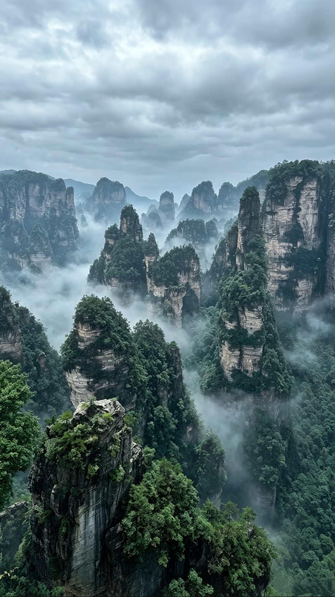
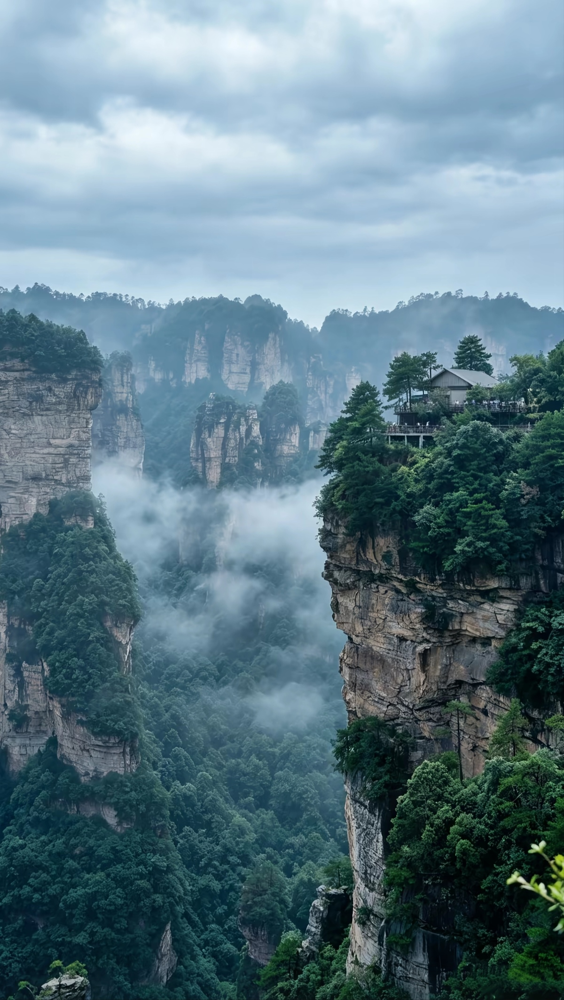
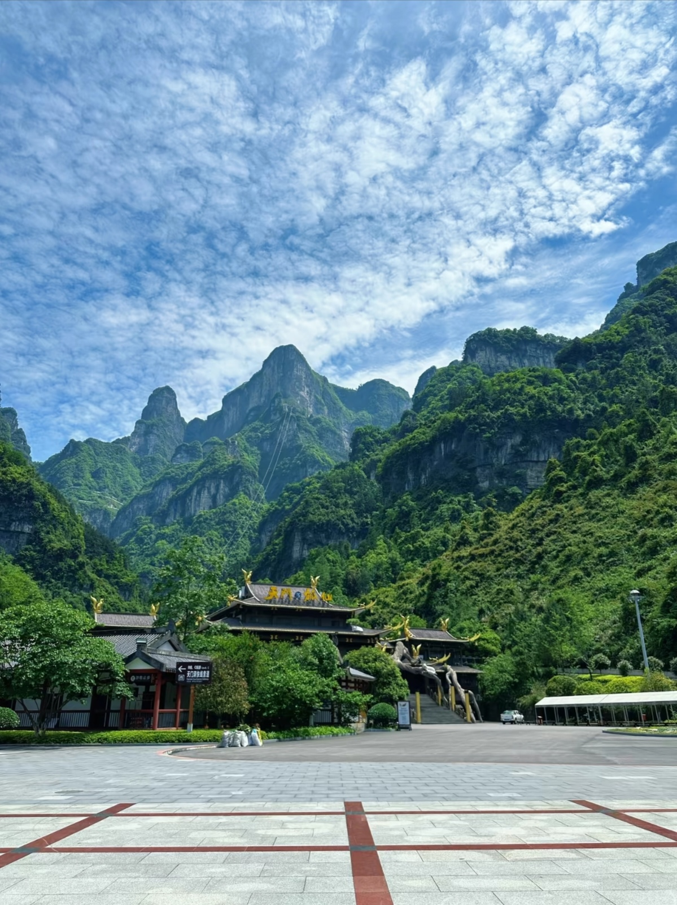
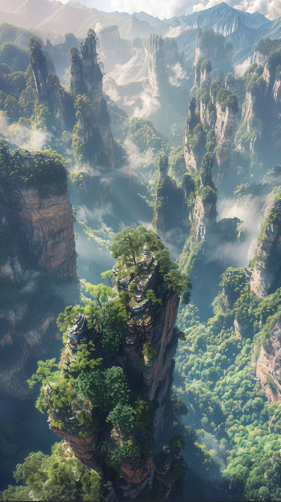
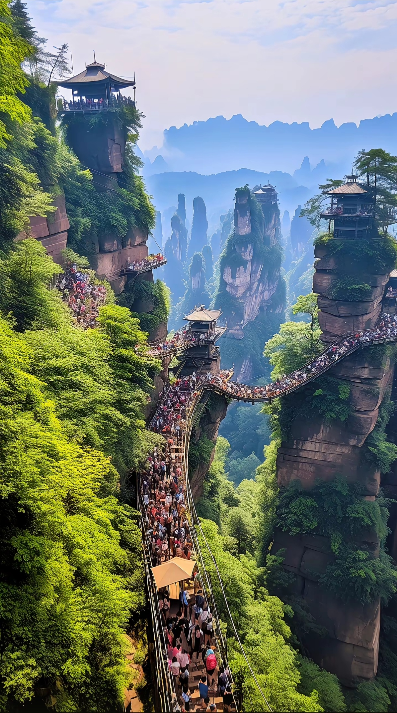
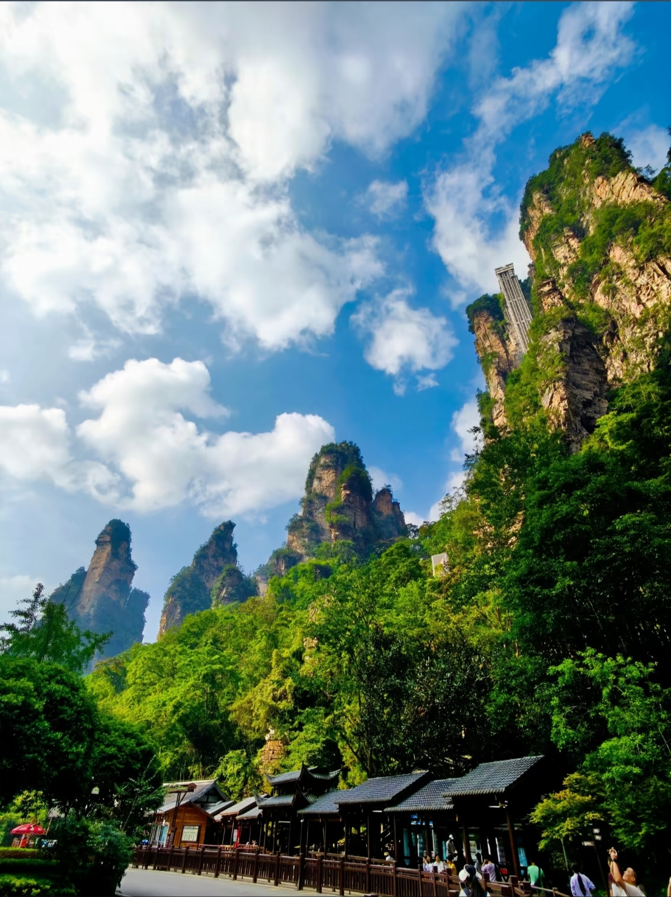

Zhangjiajie National Forest Park is famous for its towering sandstone pillars that inspired the floating mountains in the movie Avatar. Located in Hunan Province, the park features over 3,000 quartzite columns, some rising over 1,000 meters. The surreal landscape, combined with the world's longest and highest glass bridge, makes Zhangjiajie one of China's most spectacular destinations.






Zhangjiajie Hehua Airport: Direct flights from Beijing (2.5h), Shanghai (2.5h), Guangzhou (2h). Airport to city: ¥30, 30 min.
From Changsha: 2-2.5 hours, ¥150-200. Zhangjiajie West Railway Station is 10 km from city center.
From City: Bus from Zhangjiajie Central Bus Station to Wulingyuan (40 min, ¥13). Then park entrance shuttle.
Park Shuttle Buses: Free with entrance ticket. Connect all major scenic areas. Runs 7:00 AM - 6:00 PM.
Highlights: Avatar Hallelujah Mountain, First Bridge Under Heaven, Enchanting Terrace
Access: Bailong Elevator up (¥72), walk around, bus down
Duration: 3-4 hours
Highlights: Imperial Writing Brush Peaks, Fairy Scattering Flowers, Helong Park
Access: Cable car up (¥72), walk viewpoints, cable car down
Duration: 3-4 hours
Highlights: Peaceful valley walk, Golden Whip Rock, Longevity Spring
Access: Walk entire 5.7 km trail (flat, easy)
Duration: 2-3 hours
Highlights: World's longest glass bridge, Zhangjiajie Grand Canyon, boat ride
Cost: ¥219 (includes bridge and canyon)
Duration: Full day
Location: Wulingyuan Town (near park entrance)
Specialty: Three-pot stew (sanxia guo), Spicy fish head
Hours: 11:00 AM - 9:00 PM
Location: Downtown Zhangjiajie
Specialty: Spicy Hunan dishes, Smoked meat
Hours: 11:00 AM - 10:00 PM
Location: Inside the park (major stops)
Specialty: Noodles, Rice, Corn, Tea eggs
Hours: 7:00 AM - 5:00 PM
Location: Tujia villages near park
Specialty: Tujia bacon, Rice tofu, Wild vegetables
Hours: 11:00 AM - 8:00 PM
Location: Wulingyuan District
Features: Luxury, Mountain views, Spa
Distance to Park: 5 min drive
Location: Wulingyuan Town
Features: Comfortable, Good restaurants nearby
Distance to Park: 10 min walk
Location: Downtown Zhangjiajie
Features: Budget-friendly, Shopping, Transport hub
Distance to Park: 40 min by bus
Location: Wulingyuan and park area
Features: Budget, Social atmosphere
Distance to Park: Walking distance